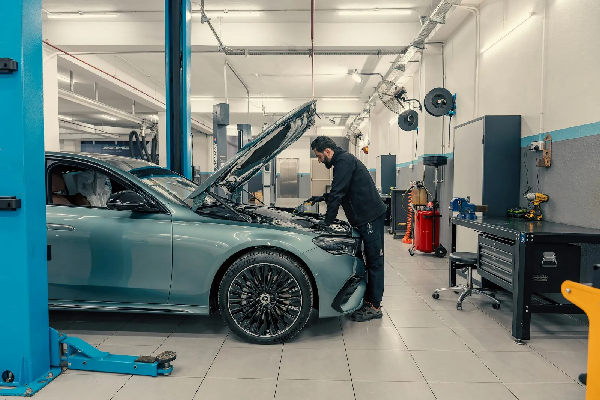
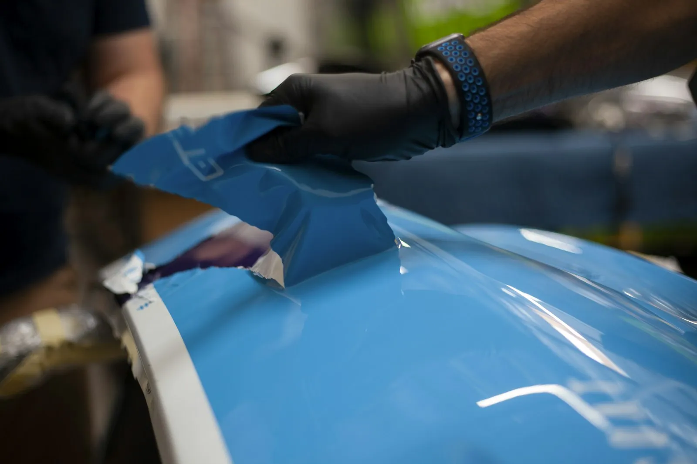

Dit is een voorbeeldsite, gemaakt door Stijn van Digital Impression. Meer uitleg onderaan
Haneweestraat 38, Lokeren
Onderhoud of een deuk, één adres.
Garage en carrosserie Geert De Vos zorgt voor je wagen van A tot Z. Een onderhoudsbeurt, een herstelling onder de motorkap of schade aan de carrosserie: je hoeft er niet mee naar twee verschillende plaatsen.
Omdat garage en carrosserie onder hetzelfde dak zitten, kan een herstelling na een aanrijding in één keer gebeuren: wat mechanisch stuk is en wat aan de buitenkant beschadigd is.

Garage
Onderhoud en herstellingen
Je auto vlot en veilig op de baan houden, zonder dat je je zorgen moet maken over wat er onder de motorkap gebeurt.
Onderhoudsbeurten
Olie en filters
Remmen en banden
Klaarmaken voor de keuring
Herstellingen
Diagnose bij een storing

Carrosserie
Schadeherstel en spuitwerk
Van een parkeerdeuk tot schade na een aanrijding. De kleur wordt afgestemd zodat je achteraf niet ziet waar het gebeurd is.
Deuken en krassen
Schade na een ongeval
Bumpers herstellen
Spuitwerk in de juiste kleur
Roest bijwerken
Delen vervangen
Schade melden
Waar zit de schade?
Tik op de plek van de schade en kies wat er gebeurd is. Je bericht staat meteen klaar. Voeg in WhatsApp nog een paar foto's toe en Geert laat je weten wat het wordt.
Over de middag dicht van 12 tot 13 uur. In het weekend gesloten.
8u12u18u
Vragen die vaak komen
Moet ik een afspraak maken?
Voor een onderhoud of een herstelling wel, dan is er tijd voor je wagen. Wil je gewoon even schade laten bekijken, bel of stuur een foto en spreek een moment af.
Kan ik schade via mijn verzekering laten herstellen?
Leg het gerust voor. Neem je polis of de gegevens van je verzekering mee, dan bekijken we samen hoe je het best te werk gaat.
Hoe lang ben ik mijn wagen kwijt?
Dat hangt af van het werk. Een onderhoud is vaak dezelfde dag klaar. Bij schadeherstel hoor je vooraf hoeveel dagen het ongeveer duurt.
Weet ik vooraf wat het kost?
Ja. Je krijgt eerst een prijs. Komt er onderweg iets bij, dan bellen we je voor we verder gaan.
Kan ik op zaterdag langskomen?
Op zaterdag en zondag is de garage gesloten. Tijdens de week kan je terecht van 8u30 tot 12u en van 13u tot 18u.
Contact
Even langs de Haneweestraat?
Haneweestraat 38 in Lokeren. Bel of stuur een berichtje, dan spreken we af wanneer je je wagen kan brengen.